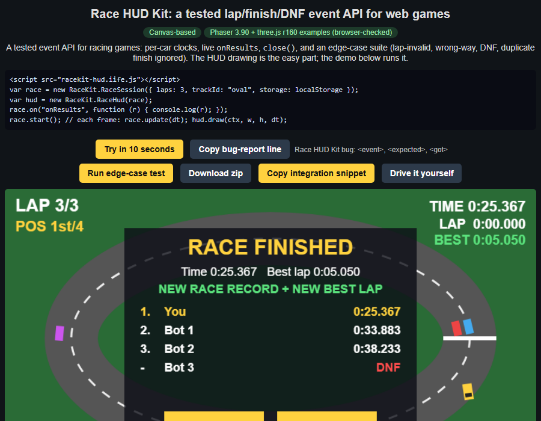

Canvas-basedPhaser 3.90 + three.js r160 examples (browser-checked)
A tested event API for racing games: per-car clocks, live onResults, close(), and an edge-case suite (lap-invalid, wrong-way, DNF, duplicate finish ignored). The HUD drawing is the easy part; the demo below runs it.

<script src="racekit-hud.iife.js"></script>
var race = new RaceKit.RaceSession({ laps: 3, trackId: "oval", storage: localStorage });
var hud = new RaceKit.RaceHud(race);
race.on("onResults", function (r) { console.log(r); });
race.start(); // each frame: race.update(dt); hud.draw(ctx, w, h, dt);
Race HUD Kit bug: <event>, <expected>, <got>
Run edge-case test Download zip Drive it yourself
↑ gas ↓ brake ←→ steer Enter start W toggle wrong-way test (only shown while racing) Touch: tap the canvas, then use the on-screen buttons. After the race: R restart, N next race (or click).
Race 3 laps around the oval. Checkpoints sit at the bottom, left and top: cutting across the infield gives "lap invalid". Add ?autoplay=1 to the URL to watch an unattended edge-case run (wrong-way, shortcut lap rejected, DNF, results). Your best times are saved in this browser. The wrong-way warning needs the car to move (speed above 25) against the flow of traffic; press W to force it while testing.
Use counter: no cookies, no personal data. The numbers on the buttons are clicks counted in your browser only (localStorage). The page owner cannot see them: counting visits across users needs a server endpoint, and none is configured (see README).
python test_race_core.py, 9 tests):
onLapInvalid: a shortcut lap is rejected with "missed checkpoint 2".onWrongWay: fires when the car drives against the track direction.reportDnf: a bot that crashes out gets a DNF row in the results.onResults, close(), copy button, zip with screenshots.